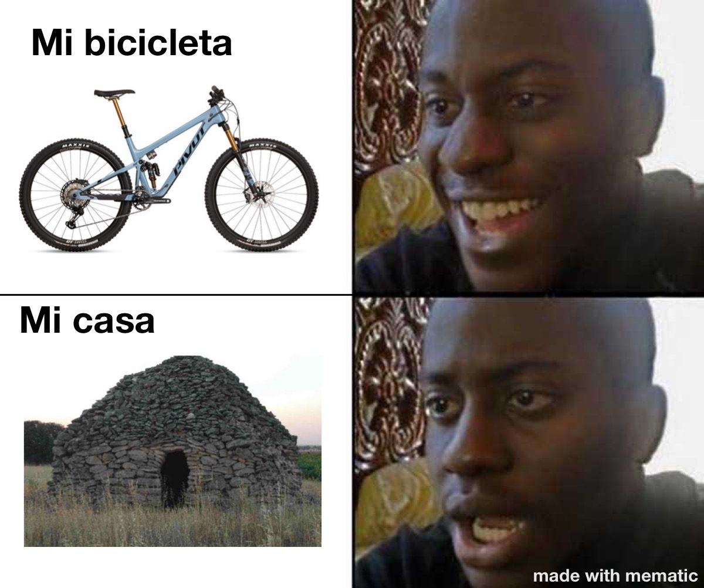

En todo el mundo existen diferentes tipos de bicis en todo el mundo,van desde 1000 pesos
mexicanos hasta los 300 mil depende mucho de que material
usen para fabricarlas
5/nov/2021
tipos de bicis
hay diferentes tipos de bicis y cada una se puede armar de manera diferente dependen los
frenos que tengan y dependen demasiadas cosas yo te recomiendo que si vas empezando en
la bici de montaña y no quieres gastar mucho dinero puedes comprar una kona rigida o una
trek marin
aunque no se vean bicis tan buenas te aseguro que para empezar son de los mejor con
forme vayas mejorando puedes ir mejorando tu bici
o comprarte una nueva.
En esta imagen se muestra como es praticado el deporte de bici de montaña.
Hay tipos de bicis en todo el mundo,van desde 1000 pesos mexicanos hasta los 300 mil
depende mucho de que material
5/nov/2021
VIDEO
Autor: DW Español.Año:2020.
En este video explican como es que durante la pandemia el uso de la bici se a
incrementado mucho y como esto ayuda al mundo y al medio ambiente
tipos de bicis
yeti
giant
felt
santa cruz
commencal
bennotto
marin
yt
rocky mountain
canyon
sitios oficiales
27/11/2021
videos oficiales
27/11/2021
VIDEO
Autor: Chucho
En este video te explico como ir a la montaña por primera vez y como mantener tu
bici en perfecto estado y siempre funcionando.
Meme sobre bici de montaña
Meme

Texto de descripción de mi ilustración.
Microbloging
Hoy en este Microbloging les hablare sobre consejos que debes utilizar para ir
por primera vez a andar en bici
en la montaña.Lo primero que debes de tener en cuenta es que debes de preparar
todo un dia
antes,prepara un pequeño lunch y asegurate
que tu bici este en perfecto estado,al otro dia levantate temprano y ve con
amigos para que sea mas divertida la experiencia,
asegurate que la ruta que vayan a hacer se de un nivel facil para que no tengas
dificultades y disfrutes de la bajada,no te separes
de tus amigos ya que en la montaña es muy facil perderse
Lo primero que debes de tener en cuenta es que debes de preparar
todo un dia
antes,prepara un pequeño lunch y asegurate
que tu bici este en perfecto estado,al otro dia levantate temprano y ve con
amigos para que sea mas divertida la experiencia,
asegurate que la ruta que vayan a hacer se de un nivel facil para que no tengas
dificultades y disfrutes de la bajada,no te separes
de tus amigos ya que en la montaña es muy facil perderse.
Por ultimo un consjeo
que te doy es que siempre mantengas el cuerpo hacia
atras y confia
en ti mismo.
Microbloging
En este Microbloging les hablare sobre como mantener su bici en buen estado y
que hacer
para que funcione a la perfeccion.
Lo primero que debes hacer para tener una bici
en perfecto estado es lavarla por lo menos
una vez a la semana
pero no debes de usar cualquier jabon ni cualquier cepillo,debes de asegurarte
de compar un
jabon especial
para bicis y algun cepillo o esponja que no raye tu bici es importante que
cuando la
termines de lavar la seques muy bien y eceites la cadena,para eso compra un
aciete o una
cera especial
ya que eso mantendra umectada tu cadena y hara que tenga mas durabilidad.
Por
ultimo no te olvides de siempre cuidar tu bici ya que no son nada baratas,trata
de ir
por lugares
que no vayan a dañar tu bici y siempre que notes algo que no es normal en tu
bici llevala
indmediatamente a servicio.
Microbloging
En este Microbloging les hablar sobre como elegir la bici perfecta dependiendo
tus gustos
y dependiendo que tipo de bici quieres hacer.
Lo primero que debes pregunarte
antes de compar una bici es cuando dinero quieres gastar
ya que
hay bicis que cuesta desde 15 mil pesos hasta 250 mil,tambien debes de tener en
cuenta que
tipo de bici quieres
hacer ya que existen muchos tipos de bicis como:MTB,Down Hill,Ruta y muchos mas
por eso
debes de tener claro
que es lo que queires hacer,despues de que tengas claro esas cosas lo que debes
hacer es
encontar una tienda
de confianza que te proporcione una buena bici y a buen precio.
Para terminar
asegurate de que cuando te entregen tu bici todo este en perfectas
condiciones y sino pidele a la tienda
que te ayude a solucionar los problemas y dudas que tengas sobre la bici.
Microbloging
Hoy en este Microbloging les hablare sobre lugares a los que puedes ir a andar en bici de
montaña
dentro y fuera de Mexico.
Hay muchos lugares para andar en bici en Mexico uno de mis preferidos es Laguna de Servin
ya que esta en el bosque y las pistas no son muy dificiles,otro lugar es la fragua que se
encuentra en el estado
de Guanjuato esta un poco alejado de la ciudad pero es un lugar increible para andar en
bici,te recomiendo que vayas
cuando ya estes un poco mas experimentado y controles mas la bici ya que ahi las pistas son
mas dificiles y estan
mucho mas enpinadas,fuera de Mexico existen millones de pistas para andar en bici los
lugares que yo te recomiendo ir son
Whistler y Colorado ya que las pistas ahi son fabulosas.
Por ultimo siempre ve con amigos o contrta un guia ya que si es un lugar nuevo para ti es
muy facil perderse y que
ocurra un axidente.
Microbloging
En este mircoblogging les hablar sobre los equipamientos y cosas que debes de llevar para
hacer bici de montaña
con seguridad y que no te pase nada.
Lo primero que debes de compar es un casco ya que si te caes un casco te protege el cerbro
y te ayuda a que no
vayas a sufir ningun daño cerebral o algo peor lo segundo que debes de compar son rodilleras
ya que en caso de una
caida estas te protegeran las rodillas,tambien compra unos guantes te ayudaran a proteger
tus manos y a controlar mejor
la bici,tambien asegurate de compar un termo o una bolsa de agua ya que esta te ayudara
mucho cuando estes en la montaña
y tengas sed,tambien consigue un kit de herramientas basicas por si se te descompone la bici
en medio de la montaña
puedas regresar y no te quedes varado.
Aseguarte de comprar todo esto en alguna tienda de bici profesional y compra todo de buena
calidad,tal vez sea caro
pero es mejor eso a que te compres algo de mala calidad y termines lastimandote por eso.
 Bicicleta de montaña
Bicicleta de montaña
 bici de
montaña
bici de
montaña